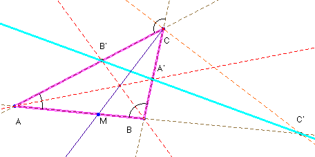

Problema nº 97.- Un problema de las bisectrices internas y exteriores.
Las bisectrices internas de dos ángulos de un triángulo escaleno y la exterior del tercer ángulo cortan a sus respectivos lados opuestos en tres puntos que están alineados.

Como en el problema nº 96, las dos bisectrices de C cortan al lado opuesto en puntos que separan armónicamente a los otros dos vértices, esto es, (C’MBA) = -1, esto es igual que de donde (1)Como las bisectrices son cevianas se verifica (2) Multiplicando las expresiones (1) y (2) queda: , que, según el teorema de Menelao demuestra la alineación. c.q.d.